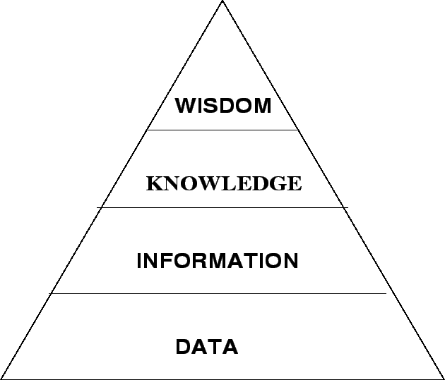

Next: Kinds of Knowledge
Up: Understanding Knowledge
Previous: Cognitive Psychology
Contents
- Data represents unorganized and unprocessed facts.
- Usually data is static in nature.
- It can represent a set of discrete facts about events.
- Data is a prerequisite to information.
- An organization sometimes has to decide on the nature and volume of
data that is required for creating the necessary information.
- Information
- Information can be considered as an aggregation of data (processed
data) which makes decision making easier.
- Information has usually got some meaning and purpose.
- Knowledge
- By knowledge we mean human understanding of a subject matter
that has been acquired through proper study and experience.
- Knowledge is usually based on learning, thinking, and proper
understanding of the problem area.
- Knowledge is not information and information is not data.
- Knowledge is derived from information in the same way information
is derived from data.
- We can view it as an understanding of information based on its
perceived importance or relevance to a problem area.
- It can be considered as the integration of human perceptive
processes that helps them to draw meaningful conclusions.
Figure 1.1:
Data, Information, Knowledge and Wisdom
|

|
Next: Kinds of Knowledge
Up: Understanding Knowledge
Previous: Cognitive Psychology
Contents
Knowledge Management Systems
2004-11-01